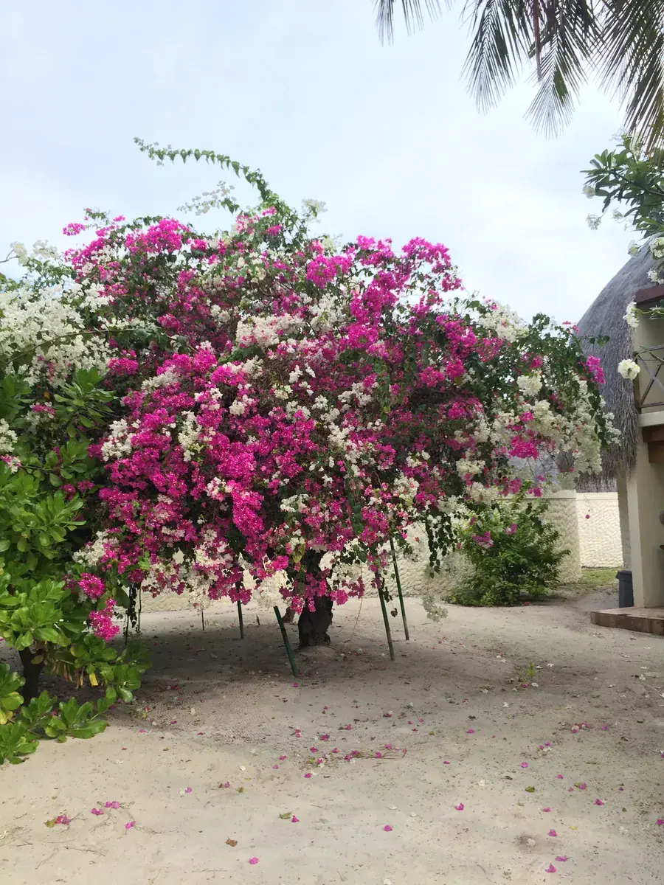

马尔代夫最厉害的生意，竟然是卖一座岛
Maldives: How "One Island, One Resort" Became a Distinctive Tourism Model

2013 年，我去了趟马尔代夫。具体住的哪个岛、哪家度假村，如今已经记不清了。但有两个画面一直留着：一个是沿着度假村甬道、栈桥两侧种得到处都是的三角梅；另一个是专门包船出海，在印度洋上追一群野生海豚的那天下午。
当时只觉得美。后来回头看，这两个画面恰好藏着这个国家最值得读的商业逻辑。


一岛一酒店：把"稀缺"做成卖点
马尔代夫由散布在印度洋上的珊瑚岛组成，陆地分散、淡水资源有限，也缺少发展大规模传统工业所需的土地条件。
但马尔代夫走出了一条很有辨识度的路：以"一岛一度假村"为代表的旅游开发模式，把岛屿分散、空间有限的地理条件，转化成了独特的度假体验。在不少度假岛上，整座岛屿的开发与一家度假村紧密结合。游客抵达马累后，通常还要根据目的地换乘水上飞机或快艇，前往预订的度假岛。岛屿的空间边界，反而强化了私密感、专属感和远离日常生活的体验；而"独享一座岛"之所以能被明码标价，本质上也来自同一件事——这个国家几乎没有连成片的陆地。
马尔代夫的自然条件和土地空间有限，却把度假体验中的许多细节做得很具体。就连度假村步道两侧的三角梅，也被精心安排进整个空间设计里。花不只是花，它也是游客对这座岛的体验和记忆的一部分。
当一个地方没有资源可以"造"，就要学会把眼前所有能被体验到的东西，都变成产品的一部分。
——董立鑫 海鑫汇创始人兼执行总裁，新加坡世贸秘书长兼首席运营官
把身家押在一种体验上的代价
旅游业是马尔代夫经济的重要支柱，不仅带来旅游收入，也带动交通、酒店、餐饮及相关服务业的发展。与此同时，对旅游业的高度依赖，也意味着外部冲击可能迅速传导至整个经济。
这种产业结构也带来了风险：当疫情等外部冲击使国际旅行受阻时，旅游收入会受到直接影响，并进一步传导至交通、酒店、餐饮等相关行业。随着国际旅行逐步恢复，旅游需求也有机会回升。旅游业既是马尔代夫的重要优势，也是观察其经济韧性时绕不开的一环。
十二年后，换一种方式看同一个国家
2013 年我去马尔代夫，是个游客——看三角梅，看海豚，琢磨这个国家怎么把"没有什么"变成"有什么可卖"。
2025 年，我和马尔代夫驻华大使坐下来，聊的是另一层问题：中马之间的商业、投资与人才交流可以怎么走。（这场对话的完整内容，看这篇 马尔代夫驻华大使对话。）
2013 年，我看到的是马尔代夫如何把独特的自然条件转化为旅游价值。到了 2025 年，交流的视角从旅行体验延伸到了商业、投资与人才合作。一个市场的机会，不只存在于它已经成熟的产业，也可能存在于它未来希望发展的方向。

看懂一个市场，先看它靠什么
马尔代夫给我的启发，不只是如何把稀缺资源变成产品。
更重要的是，一个地方真正的竞争力，不一定来自它拥有什么，也可能来自它如何重新组织自己拥有的东西。
但一门生意越依赖某一种独特优势，就越需要思考：当外部环境改变时，下一步的增长从哪里来？
把资源变成产品，是一种能力；让这种能力持续创造价值，则是另一种能力。
本文整理自董立鑫（Bruce Dong）海外产业考察记录，首发于海鑫汇。